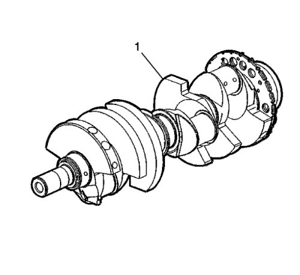
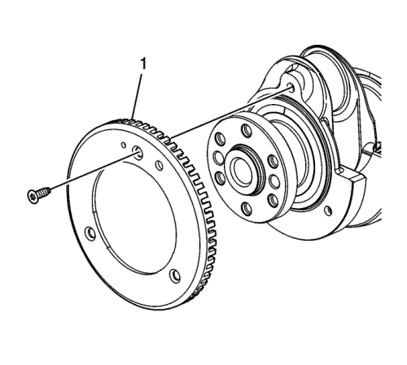
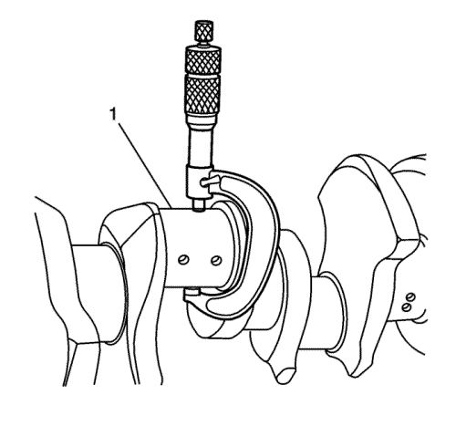
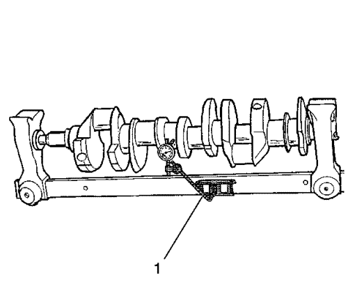
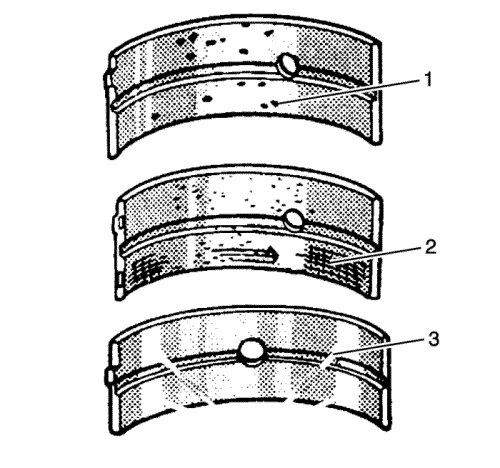

Nota: Tenga cuidado al conducir el cigüeñal. Evite daños a las superficies de los cojinetes o a los salientes del anillo reluctor de posición del cigüeñal. Los daños en los dientes del anillo reluctor de posición del cigüeñal pueden afectar al rendimiento del sistema de diagnóstico a bordo II (OBD).
- Limpie el cigüeñal con disolvente (1)
- Limpie todos los pasos de aceite e inspeccione la presencia de limitaciones de paso o rebabas.
Advertencia: Consulte Advertencia, protección ocular en la sección Prólogo
- Secar el cigüeñal utilizando aire a presión.
Nota: Los dientes del anillo reluctor no deben presentar imperfecciones en los bordes ascendentes o descendentes.
Las imperfecciones de los dientes del anillo reluctor pueden afectar al rendimiento del sistema OBD II.
- Realice una inspección visual de daños al cigüeñal.

- Puede sustituirse el anillo reluctor (1) de posición del cigüeñal si se daña. Apriete los tornillos del anillo reluctor de la posición del cigüeñal hasta 15 N·m (11 lib. pie).

- Inspeccione la presencia de desgaste en los muñones del cigüeñal (1). Los muñones deben estar lisos, sin señales de estrías, desgaste o daño.
- Inspeccione la presencia de ranuras o estrías en los muñones del cigüeñal (2).
- Inspeccione la presencia de rayas o desgaste en los muñones del cigüeñal (3).
- Inspeccione la presencia de material de los cojinetes incrustado o de corrosión alveolar de los muñones del cigüeñal (4).

- Mida la excentricidad de los muñones del cigüeñal (1).
- Mida el ahusado de los muñones del cigüeñal.

- Medir el alabeo del cigüeñal.
Utilizando cuñas de madera, soporte el cigüeñal sobre los muñones delantero y trasero.
- Utilice el indicador GE-7872 (1) para medir el alabeo del cigüeñal en los muñones intermedios delantero y trasero.
- Utilice el indicador GE-7872 para medir la excentricidad de la brida trasera del cigüeñal.
- Sustituya el cigüeñal si las medidas no están dentro de las especificaciones.

- Revise si hay huecos o alveolos en los cojinetes del cigüeñal (1). Unas secciones aplanadas en las mitades del cojinete también indican fatiga.
- Revise si hay demasiadas estrías o decoloración en los cojinetes del cigüeñal (2).
- Inspeccione la presencia de suciedad o virutas incrustadas en el material de los cojinetes del cigüeñal.
- Revise si la fijación de los cojinetes del cigüeñal no es adecuada, lo que se muestra por secciones brillantes y pulimentadas del cojinete (3).
Si está desgastada o dañada la parte inferior del cigüeñal, deben sustituirse la mitad inferior y la superior.
Generalmente, si puede utilizarse la mitad inferior, también debe serlo la mitad superior